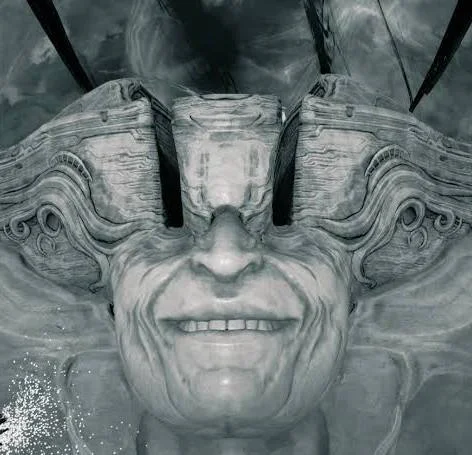
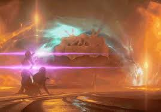

About
Hello and Welcome to my project centered around The Man in the Wall. I'll be analying on it's origins, motives, and dealings throughout game. I'll also piece all of them together to theorize on what he will plan or do in the future.

What is Warframe?
Warframe is an 2013 free to play looter shooter that follow centuries old warriors(space ninjas) at war different factions in the Origin System(solar system).


Question
What does it influence? How does it influence events? Why does he want us???

Sources provided by Warframe wiki.